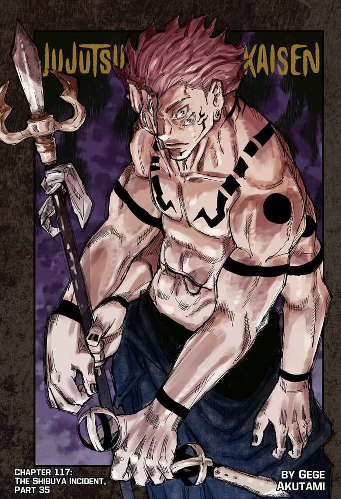
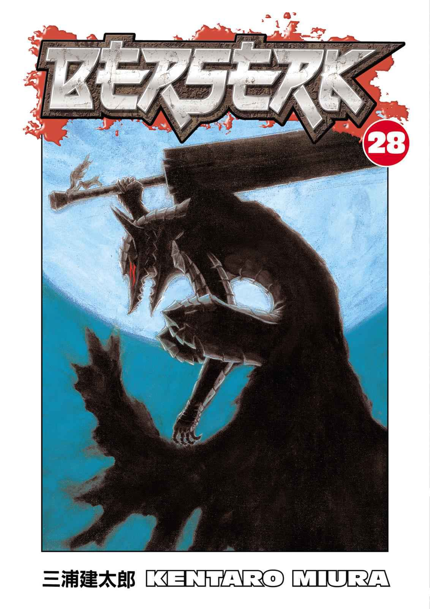
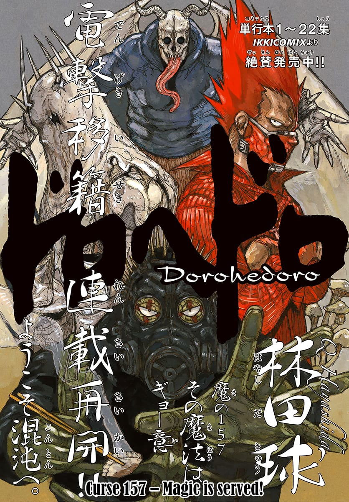
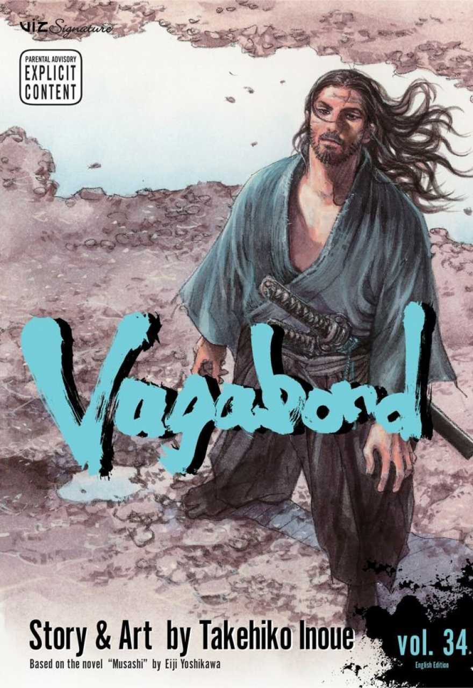

AKSHAY DHIMAN
Last updated Apr 7, 2017
intro to know more about how curses effect your domain
**Jujutsu Kaisen** (JJK) is a Japanese manga series written and illustrated by Gege Akutami, first serialized in Weekly Shōnen Jump in 2018. The story is set in a world where cursed spirits threaten humanity, and a secret organization of sorcerers, known as **Jujutsu Sorcerers**, battles to exorcise these malevolent beings using cursed energy. The protagonist, **Yuji Itadori**, is a high school student with extraordinary physical strength who stumbles into the world of jujutsu when he swallows a powerful cursed object: the finger of **Ryomen Sukuna**, an infamous and nearly indestructible curse. After becoming Sukuna's vessel, Yuji is thrust into the dangerous and complex world of curses, sorcery, and life-or-death battles. Guided by his mentor, **Satoru Gojo**, Yuji teams up with fellow sorcerers to fight curses, while navigating the dark and mysterious world of jujutsu, where nothing is as it seems. The series blends high-octane action, supernatural elements, and emotional depth, making it a standout in modern shōnen manga.
category:shonen
**Berserk** is a dark fantasy manga series written and illustrated by **Kentaro Miura**, first published in 1989. The story is set in a medieval-inspired world filled with supernatural creatures, demonic forces, and the brutal realities of war and betrayal. At its core is the journey of **Guts**, a lone mercenary with an immense physical and emotional burden, who wields a massive sword and fights relentlessly for survival. Guts’ life is marked by hardship and violence, as he navigates a world corrupted by dark powers. His fate becomes intertwined with **Griffith**, a charismatic and ambitious leader of the **Band of the Hawk**, a mercenary group that rises to prominence through war. As their bond deepens, so does the tragedy that befalls them, ultimately leading to the catastrophic event known as the **Eclipse**, where Griffith sacrifices his comrades to ascend as a demonic entity. Berserk delves into profound themes like revenge, the nature of humanity, free will, and the struggle between light and darkness. Known for its detailed artwork, visceral combat scenes, and psychological depth, **Berserk** has become a defining work in the dark fantasy genre, influencing many stories that followed. The series is praised for its exploration of moral ambiguity and Guts’ relentless determination to find meaning in a world consumed by chaos and suffering.
CATEGORY: SEINEN
**Dorohedoro** is a dark fantasy manga series created by **Q Hayashida**, first serialized in 2000. Set in a grim, post-apocalyptic world, the story is divided between two main realms: **Hole**, a dilapidated city where humans live, and the **Sorcerers' World**, inhabited by powerful sorcerers who use Hole's residents for gruesome magic experiments. The narrative centers around **Caiman**, a man with a lizard head and amnesia, who is on a quest to discover the truth about his transformation and regain his memories. Caiman, immune to magic, hunts sorcerers with his companion **Nikaido**, a skilled fighter who runs a small restaurant. Together, they search for the sorcerer responsible for his condition, leading to encounters with a cast of bizarre and violent characters. Meanwhile, a powerful sorcerer named **En** and his criminal organization, the **En Family**, become entangled in Caiman's search, as they try to protect their own interests and uncover the mysteries of Hole. Dorohedoro is known for its quirky, surreal aesthetic, blending dark humor, extreme violence, and supernatural elements. The story is both chaotic and layered, with a unique mix of horror, fantasy, and dystopian themes. Its art style is gritty and detailed, complementing the weird and unpredictable world that Hayashida has crafted, making **Dorohedoro** a cult favorite in the seinen genre.
CATEGORY: DARK FANTASY
**Vagabond** is a critically acclaimed manga series written and illustrated by **Takehiko Inoue**, based on the life of **Miyamoto Musashi**, one of Japan's most legendary swordsmen. The story is an adaptation of **Eiji Yoshikawa's** novel *Musashi* and explores Musashi's journey from a wild and violent youth to a refined and enlightened master of the sword. The narrative begins with **Takezo Shinmen**, a reckless and battle-hungry young man, who, after surviving the brutal Battle of Sekigahara, sets off on a path to become the strongest samurai in Japan. Renaming himself **Musashi**, he embarks on a lifelong quest for self-improvement, engaging in fierce duels and grappling with the philosophical meaning of strength, honor, and purpose. Vagabond is more than just a story of swordsmanship; it is a deep exploration of the human condition, inner turmoil, and the pursuit of personal enlightenment. Inoue’s masterful artwork captures both the beauty of nature and the intensity of battle, while his storytelling delves into the emotional and psychological growth of Musashi as he transitions from a violent, aimless wanderer into a disciplined and introspective warrior. The series stands out for its blend of historical realism, philosophical depth, and stunning art, making **Vagabond** not just a martial arts epic, but also a profound meditation on life, identity, and the meaning of true strength.
CATEGORY:SEINEN
